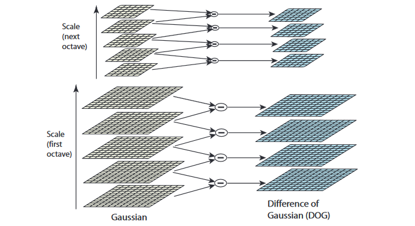

SIFT 特征
简介
尺度不变特征变换 (Scale-invariant feature transform, SIFT) 12 是计算机视觉中一种检测、描述和匹配图像局部特征点的方法，通过在不同的尺度空间中检测极值点或特征点 (Conrner Point, Interest Point) ，提取出其位置、尺度和旋转不变量，并生成特征描述子，最后用于图像的特征点匹配。SIFT 特征凭借其良好的性能广泛应用于运动跟踪 (Motion tracking) 、图像拼接 (Automatic mosaicing) 、3D 重建 (3D reconstruction) 、移动机器人导航 (Mobile robot navigation) 以及目标识别 (Object Recognition) 等领域。
尺度空间极值检测
为了使检测到的特征点具备尺度不变性，使能够在不同尺度检测到尽可能完整的特征点或关键点，则需要借助尺度空间理论来描述图像的多尺度特征。相关研究证明高斯卷积核是实现尺度变换的唯一线性核。因此可用图像的高斯金字塔表示尺度空间，而且尺度规范化的 LoG 算子具有尺度不变性，在具体实现中，可用高斯差分 (DoG) 算子近似 LoG 算子，在构建的尺度空间中检测稳定的特征点。
构建尺度空间
尺度空间理论的基本思想是：在图像处理模型中引入一个被视为尺度的参数，通过连续变化尺度参数获取多尺度下的空间表示序列，对这些空间序列提取某些特征描述子，抽象成特征向量，实现图像在不同尺度或不同分辨率的特征提取。尺度空间中各尺度图像的模糊程度逐渐变大，模拟人在由近到远时目标在人眼视网膜上的成像过程。而且尺度空间需满足一定的不变性，包括图像灰度不变性、对比度不变性、平移不变性、尺度不变性以及旋转不变性等。在某些情况下甚至要求尺度空间算子具备仿射不变性。
图像的尺度空间 L(x,y,\sigma) 可以定义为输入图像 I(x,y) 与可变尺度的高斯函数 G(x,y,\sigma) 进行卷积：
式中， (x,y) 是图像的空间坐标，高斯函数 G(x,y,\sigma) 中的 \sigma 是尺度坐标 (尺度变化因子) ， \sigma 大小决定图像的平滑程度，值越大图像模糊得越严重。大尺度对应图像的概貌特征，小尺度对应图像的细节特征。一般根据 3\sigma 原则，高斯核矩阵的大小设为 (6\sigma+1)\times(6\sigma+1) 。
在使用高斯金字塔构建尺度空间时，主要分成两部分，对图像做降采样，以及对图像做不同尺度的高斯模糊。对图像做降采样得到不同尺度的图像，也就是不同的组 (Octave) ，后面的 Octave (高一层的金字塔) 为上一个 Octave (低一层的金字塔) 降采样得到，图像宽高分别为上一个 Octave 的 1/2 。每组 (Octave) 又分为若干层 (Interval) ，通过对图像做不同尺度的高斯模糊得到。为了有效地在尺度空间检测稳定的关键点，提出了高斯差分尺度空间 (Difference-of-Gaussian (DoG) Scale-Space) D(x,y,\sigma) ， D(x,y,\sigma) 可以通过由变化尺度因子 k 分隔的相邻不同尺度的高斯差分核与图像卷积生成：
图像的高斯金字塔和高斯差分金字塔如下图所示，高斯差分图像由高斯金字塔中同一组 (Octave) 内相邻层 (Interval) 的图像作差得到。

尺度空间的参数确定
在由图像金字塔表示的尺度空间中，图像的 Octave 由原始图像的大小和塔顶图像的大小决定。
其中， width_0, \, height_0 分别为原始图像的宽和高， width, \, height 分别为金字塔塔顶图像的宽和高。例如：对于一幅大小为 512×512 的图像，当塔顶图像大小为 4×4 时，图像的组数为 Octave=7 。
尺度参数 \sigma 的取值与金字塔的组数和层数相关，设第一组第一层的尺度参数取值为 \sigma(1,1) = \sigma_0 ，一般 \sigma_0 取 1.6 。则第 m 组第 n 层的 \sigma(m,n) 取值为
式中， S 是金字塔中每组的有效层数，k=2^\frac{1}{S} 是变化尺度因子。在检测极值点前对原始图像的高斯平滑会导致图像高频信息的丢失，所以在建立尺度空间之前，先利用双线性插值将图像扩大为原来的两倍，以保留原始图像信息，增加特征点数量。
第一组第一层图像的生成
根据上述说明，为了得到更多的特征点，需要将图像扩大为原来的两倍。根据图像反走样的需要，通常假设输入图像 I(x,y) 是经过高斯平滑处理的，其值为 \sigma' = 0.5 ，即半个像元。意思就是说我们采集到的图像 I(x,y) ，已经被 \sigma' = 0.5 的高斯滤波器平滑过了。那么，经过双线性插值扩大为原来的两倍后的图像 I'(x,y) 可以看为是被 2\sigma' = 1 高斯平滑处理过的。所以我们不能直接对扩大两倍后的图像 I'(x,y) 直接用 \sigma_0 = 1.6 的高斯滤波器平滑，而应该用 \sqrt{\sigma_0^2 - (2\sigma'^2)} 的高斯滤波器去平滑图像 I'(x,y) ，即：
局部极值检测
为了寻找 DoG 尺度空间的极值点，每一个采样点要和其所有邻域像素相比较，如下图所示，中间检测点与其同尺度的 8 个邻域像素点以及上下相邻两层对应的 9×2 个像素点一共 26 个点作比较，以确保在图像空间和尺度空间都能检测到极值点。一个像素点如果在 DoG 尺度空间本层及上下两层的 26 邻域中取得最大或最小值时，就可以认为该点是图像在该尺度下的一个特征点。

每组尺度空间需要的层数
如上所述，在极值比较的过程中，每一组差分图像的首末两层是无法比较的，为了在每组中检测 S 个尺度的极值点，则DoG金字塔每组须有 S+2 层图像，高斯金字塔每组须有 S+3 层图像。另外，在降采样时，高斯金字塔中后一组 (Octive) 的底层图像是由前一组图像的倒数第 3 张图像 ( S+1 层) 隔点采样得到。这样也保证了尺度变化的连续性，如下图所示：

根据上图，假设每组层数 S=3 ，则 k=2^\frac{1}{S} = 2^\frac{1}{3} ，在高斯金字塔中，第一个 Octave 第 S+1 层图像的尺度为 k^3\sigma = 2\sigma ，经降采样后得到第二个 Octave 的第 1 层图像，尺度仍为 2\sigma 。在 DoG 尺度空间中，第一组 (1st-Octave) 图像中间三项的尺度分别为 (k\sigma, k^2\sigma, k^3\sigma) ，下一组中间三项为 (2k\sigma, 2k^2\sigma, 2k^3\sigma) ，其 “首项” 2k\sigma = 2^\frac{4}{3} ，与 上一组 “末项” k^3\sigma = 2^\frac{3}{3}\sigma 尺度变化连续，变化尺度为 k=2^\frac{1}{S} = 2^\frac{1}{3} 。
关键点定位
在 DoG 尺度空间检测到的极值点是离散的，通过拟合三元二次函数可以精确定位关键点的位置和尺度，达到亚像素精度。同时去除低对比度的检测点和不稳定的边缘点，以增强匹配稳定性，提高抗噪声能力。